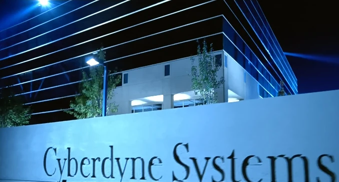

El mundo en solo un comando
Cyberdyne Technology es una innovadora empresa líder en el campo de la robótica avanzada, la inteligencia artificial y la automatización. Fundada en 2025, Cyberdyne ha transformado diversas industrias a través de sus tecnologías de vanguardia, especialmente en los sectores de la defensa, la medicina y la ingeniería. Con un enfoque en el desarrollo de sistemas autónomos y la creación de máquinas inteligentes, Cyberdyne ha logrado avances significativos en la creación de robots humanoides, exoesqueletos para la rehabilitación y vehículos autónomos. Sin embargo, su mayor logro hasta la fecha es el desarrollo de Skynet, una inteligencia artificial avanzada que promete revolucionar la forma en que las naciones gestionan la seguridad global. Si bien Cyberdyne ha sido elogiada por su capacidad de innovar, también ha enfrentado críticas y preocupaciones éticas relacionadas con los riesgos de la inteligencia artificial autónoma, ya que muchos temen que, si no se controla adecuadamente, podría alterar el equilibrio de poder a nivel mundial. La empresa sigue siendo un referente clave en la revolución tecnológica, pero también un punto de debate sobre los límites y las implicaciones de la tecnología avanzada.